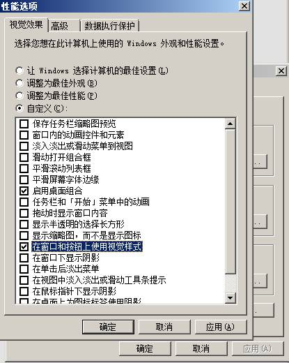

函数简介:
针对部分检测措施的保护盾. 前面有五角星的表示同时支持32位和64位,否则就仅支持64位.
驱动功能支持的系统版本号为(win7/win8/win8.1/win10(10240)/win10(10586)/win10(14393)/win10(15063)/win10(16299)/win10(17134)/win10(17763)/win10(18362)/win10(18363)/win10(19041)/win10(19042)
/win10(19043)/win10(19044)/win10(19045)/win11(22000)/win11(22621)/win11(22631)/win11(26100)
不支持所有的预览版本,仅仅支持正式版本.
新点的WIN10和WIN11必须要关闭内核隔离.否则会无法加载驱动,或者加载某些功能蓝屏.
函数原型:
long DmGuard(enable,type)
参数定义:
enable 整形数:
0表示关闭保护盾(仅仅对memory memory2 memory3 memory4 memory5
memory6 b2 b3 display3 display4起作用)
1表示打开保护盾
type 字符串: 参数具体内容可以是以下任意一个.
★"np" : 这个是防止NP检测(这个盾已经过时,不建议使用).
★"memory" : 这个保护内存系列接口和汇编接口可以正常运行. (此模式需要加载驱动)
★"memory2" : 这个保护内存系列接口和汇编接口可以正常运行. (此模式需要加载驱动)
"memory3
pid addr_start addr_end" : 这个保护内存系列接口和汇编接口可以正常运行.pid表示要操作内存的进程ID,指定了以后,所有内存系列接口仅能对此pid进程进行操作,其他进程无效. 但此盾速度较快。addr_start表示起始地址(此参数可以忽略),addr_end表示结束地址(此参数可以忽略). 另外，如果你发现有地址读写不到，可以尝试重新调用一次此盾.此盾是对指定的PID，指定的地址范围做快照.
(此模式需要加载驱动)
"memory4"
: 这个保护内存系列接口和汇编接口可以正常运行. (此模式需要加载驱动)
"memory5"
: 这个保护内存系列接口和汇编接口可以正常运行. (此模式需要加载驱动,直接读写物理内存,所以对于地址空间不在物理内存里的地址,就会无法读写.)
"memory6"
: 这个保护内存系列接口和汇编接口可以正常运行. (此模式是memory5的加强版本,需要加载驱动,直接读写物理内存,所以对于地址空间不在物理内存里的地址,就会无法读写.)
"phide
[pid]" : 隐藏指定进程,保护指定进程以及进程内的窗口不被非法访问. pid为可选参数.如果不指定pid，默认保护当前进程. (此模式需要加载驱动,目前仅支持32位系统)
"phide2 [pid]" : 同phide. 只是进程不隐藏(可在任务管理器中操作) (此模式需要加载驱动,目前仅支持32位系统)
"phide3 [pid]" : 只隐藏进程(在任务管理器看不到),但不保护进程和窗口. (此模式需要加载驱动,目前仅支持32位系统)
★"display2" : 同display,但此模式用在一些极端的场合. 比如用任何截图软件也无法截图时，可以考虑这个盾.
★"display3 <hwnd>" : 此盾可以保护当前进程指定的窗口(和子窗口)，无法被用正常手段截图.
hwnd是必选参数. 并且必须是和当前调用进程相同进程的顶级窗口. 此盾有限制,具体查看下方的备注.
"display4
<hwnd>" : 此盾可以保护指定的窗口(和子窗口)，无法被用正常手段截图.
hwnd是必选参数. 并且必须是顶级窗口. (此模式需要加载驱动,此盾和display3类似. 只是使用了驱动来实现.并且没有display3的同进程限制.
在高版本的WIN10上效果会更好.)
★"block [pid]" : 保护指定进程不被非法访问. pid为可选参数.如果不指定pid，默认保护当前进程,另种实现方式.（此模式需要加载驱动,另外此盾在64位系统下无法隐藏驱动,调用后会让驱动无法隐藏,所以64位系统下,不太建议使用此盾)
★"b2 [pid]" : 保护指定进程不被非法访问. pid为可选参数.如果不指定pid，默认保护当前进程,另种实现方式.(此模式需要加载驱动),另外,b2盾有副作用，会导致任何和音频输出的函数无声音(比如，Play和Beep函数，或者类似此函数实现的方式. 解决办法是另外创建一个进程用来播放音乐). 另外要特别注意，个别系统上，会出现保护进程退出时，导致系统蓝屏，解决办法是在进程结束前，关闭b2盾即可. 另外测试下来新版本的WIN10也会触发pg.
"b3
[pid]" : 保护指定进程不被非法访问. pid为可选参数.如果不指定pid，默认保护当前进程,另种实现方式.(此模式需要加载驱动),另外,b3盾有副作用，会导致无法创建线程，无法结束线程,无法操作某些系统API(比如打开文件对话框)，无法绑定目标窗口等等,解决办法是，临时关闭b3，进行你的操作,然后再打开b3。
"f1
[pid]" : 把当前进程伪装成pid指定的进程，可以保护进程路径无法被获取到.如果省略pid参数，则伪装成svchost.exe进程. (此模式需要加载驱动),另外，简单游平台专用版本无法使用此盾，原因是和简单游有冲突。 还有，使用此盾后，别人无法获取到你的进程的真实路径，但自己也同样无法获取，所以如果要获取真实路径，请务必在获取到路径后保存，再调用此盾. pid参数如果有效，那必须是一个真实存在的pid,否则会失败.如果被伪装的进程关闭了，那么当前进程也会立刻失去伪装. 还有最重要的一点，伪装的进程和目的进程，占用内存要差不多，最好目的进程占用内存要大于被伪装进程，否则可能会导致进程崩溃!!! 有些编译平台编译出的程序,貌似开这个盾会导致异常，可以尝试f2盾.
★ "d1 [cls][add dll_name
exact]" : 阻止指定的dll加载到本进程.这里的dll_name不区分大小写. 具体调用方法看下面的例子.
★ "f2 <target_process> <protect_process>" :把protect_process伪装成target_process运行. 此盾会加载target_process运行,然后用protect_process来替换target_process,从而达到伪装自身的目的.此盾不加载驱动. 这个protect_process也可以使用内存地址的形式，不用路径. 写法是这样<addr,size>,addr是内存地址,size是大小,都是10进制. 后面有例子 (使用此盾后，别人无法获取到你的进程的真实路径，但自己也同样无法获取，所以如果要获取真实路径，请务必在获取到路径后保存后,通过共享内存等方式传递给保护进程). 返回值为伪装后的进程ID
"hm module unlink" : 防止当前进程中的指定模块被非法访问.
module为模块名(为0表示EXE模块),比如dm.dll 。 unlink取0或者1，1表示是否把模块在进程模块链表中擦除,0表示不擦除.(此模式需要加载驱动)
"inject mode pid <param1>
<param2>" : 注入指定的DLL到指定的进程中. mode表示注入模式. pid表示需要注入进去的进程ID . param1和param2参数含义根据mode决定.(此模式需要加载驱动)
mode取值0 1 2 3，具体含义如下:
0: 此时param1表示需要注入的dll全路径.
param2表示为<unlink erase>.注入方式是通过创建线程注入.
unlink(取值0和1)，表示是否从进程模块链表中断链,取1表示断链.
erase(取值0和1),表示是否擦除PE头,取1表示擦除.
1: 此时param1表示需要注入的dll全路径.
param2表示为<unlink erase>.注入方式是通过APC注入.
unlink(取值0和1)，表示是否从进程模块链表中断链,取1表示断链.
erase(取值0和1),表示是否擦除PE头,取1表示擦除.
2: 此时param1表示需要注入的dll全路径.
param2表示为<hidevad erase nothread noimportdll>.注入方式是内存加载DLL.
hidevad(取值0和1),表示是否擦除vad,取1表示擦除. 注意,此参数在对部分系统上,对64位进程注入时,会导致进程崩溃.
erase(取值0和1),表示是否擦除PE头,取1表示擦除.
nothread(取值0和1),表示是否在注入时创建线程,取1表示不创建. 选1表示使用APC注入. 选0表示使用线程注入.
noimportdll(取值0和1),表示是否再次加载此DLL中的导入表DLL,取1表示不加载,直接使用.除非你真的理解这个参数的意义,否则不要轻易设置为1,会导致进程崩溃.
3: 此时param1表示需要注入的dll的地址和大小. param1表示为<addr,size>. param2表示为<hidevad erase nothread noimportdll>.注入方式是内存加载DLL.
addr表示DLL的起始地址,10进制表示. 这个同模式2.只不过DLL使用地址的方式来传递.
size表示DLL的大小，10进制表示
hidevad(取值0和1),同模式2
erase(取值0和1), 同模式2
nothread(取值0和1), 同模式2
noimportdll(取值0和1), 同模式2
以上几种注入模式,最隐蔽的是2和3,并且param2取为<1,1,1,1>. 可以自己测试使用.
另外2和3对DLL是由要求的,尽可能要让DLL的导入表简单. 也就是说尽可能不要让DLL依赖太多DLL。越简单越好.
"del <path>" :强制删除指定的文件. path表示需要删除的文件的全路径. 当path为0时,表示为当前dm.dll的路径,当path为1时,表示为当前EXE的全路径.(此模式需要加载驱动)
其它后续开发.
"★ cl pid type name": 关闭指定进程中，对象名字中含有name的句柄. pid表示进程PID.
type表示需要关闭的句柄类型. 比如Section Event
Mutant等. 具体的类型可以用pchunter查看.
name表示需要查找的对象名. 注意type和name都是大小写敏感的.
"hl [pid]" : 隐藏指定进程中的句柄,无法用正常手段获取到. pid为可选参数.如果不指定pid，默认为当前进程. (此模式需要加载驱动,另外此盾会在WIN10上触发pg蓝屏.win10系统必须过pg才可以使用)
"gr" : 开启句柄操作，具体查看DmGuardParams相关说明. (此模式需要加载驱动)
"th" : 开启线程操作，具体查看DmGuardParams相关说明. (此模式需要加载驱动)
返回值:
整形数:
0 : 不支持的保护盾类型
1 : 成功
-1 : 32位平台不支持
-2 : 驱动释放失败.(可能原因是权限不够)
-3 : 驱动加载失败,可能是权限不够. 参考UAC权限设置.或者是被安全软件拦截. 如果是在64位系统下返回此错误，需要安装补丁KB3033929.
如果是WIN10 1607之后的系统，出现这个错误，可参考这里
还有一个可能，如果使用了定制的插件，如果原先加载了老的驱动，那么新的定制可能会无法加载，返回-3. 只需要重启系统即可.(必须是重启，不是关机再开机)
-555 : f2盾的返回值, protect_process路径无法访问.
-666 : f2盾的返回值, target_process无法创建进程.(可能路径错误?)
-777 : f2盾的返回值,其它异常错误.
-
-7: 一般是系统版本不支持导致,用winver可以查看系统内部版本号. 驱动只支持正式发布的版本，所有预览版本都不支持.
-8: 驱动加载失败. 检查要加载的盾需要的条件.
-9 : 表示参数错误.
-10 : 表示此盾的功能失败了.
-11 : 表示分配内存失败.
-14 : 无效的窗口句柄
-16 : 此功能依赖的驱动没有先启动
-20 : 此功能不可重复加载
-30 : 通信模式1和2出此错误是异常错误.
-31 : 通信模式1和2出此错误是异常错误.
-32 : 通信模式1和2出此错误是异常错误.
示例:
dm.DmGuard 1,"np"
dm.DmGuard 1,"memory"
dm.DmGuard 1,"display2"
dm.DmGuard 1,"block"
dm.DmGuard 1,"block 1044"
dm.DmGuard 1,"b2"
dm.DmGuard 1,"b2 1044"
dm.DmGuard 0,"b2"
dm.DmGuard 1,"f1"
dm.DmGuard 1,"f1 2358"
dm.DmGuard 1,"f2 <c:\windows\system32\calc.exe>
<d:\test\my.exe>"
dm.DmGuard 1,"f2 <d:\test\my_cheate.exe>
<d:\test\my.exe>"
dm.DmGuard 1,"f2 <d:\test\aaa.dat> <d:\test\my.exe>"
dm.DmGuard 1,"f2 <c:\windows\system32\calc.exe>
<293478325735,234356>"
dm.DmGuard 1,"b3"
dm.DmGuard 1,"b3 1044"
dm.DmGuard 0,"b3"
dm.DmGuard 1,"memory2"
dm.DmGuard 1,"memory3 1044"
dm.DmGuard 1,"hm dm.dll 1"
dm.DmGuard 1,"hm dm.dll 0"
// 这个是隐藏exe模块
dm.DmGuard 1,"hm 0 1"
dm.DmGuard 1,"hm xxx.dll 1"
dm.DmGuard 1,"inject 0 1044 <c:\test.dll> <1 1>"
dm.DmGuard 1,"inject 1 1044 <c:\test.dll> <1 0>"
dm.DmGuard 1,"inject 2 1044 <c:\test.dll> <1 1 1 0>"
dm.DmGuard 1,"inject 3 1044 <239458,568> <1 1 1 1>"
dm.DmGuard 1,"del <c:\test.dll>"
dm.DmGuard 1,"del <0>
dm.DmGuard 1,"del <1>"
dm.DmGuard 1,"display3 1188"
dm.DmGuard 0,"display3 1188"
// 关闭进程1024中,类型为Mutant的，名字中含有test123的句柄.
dm.DmGuard 1,"cl 1024 Mutant test123"
// 关闭进程1024中,类型为Event的，名字中含有abc的句柄.
dm.DmGuard 1,"cl 1024 Event abc"
// 清除拦截列表
dm.DmGuard 1,"d1 cls"
// 拦截dll名字中含有antiphinshing的所有dll
dm.DmGuard 1,"d1 add antiphinshing 0"
// 拦截dll名字完全等同于abc.dll的DLL加载
dm.DmGuard 1,"d1 add abc.dll 1"
// 拦截所有DLL的加载
dm.DmGuard 1,"d1 add all"
// 隐藏句柄
dm.DmGuard 1,"hl"
dm.DmGuard 1,"hl 1024"
// 开启句柄操作
dm.DmGuard 1,"gr"
注 : 此函数最好在目标进程打开之前调用即可。调用一次即可。
尽量保证此函数第一个被执行，以免和其他驱动冲突.此函数最好在绑定之前执行.
可多个组合调用.
另外np和display2盾有点特殊,必须保证调用此对象的dm对象一直处于存在状态,不可以释放. 一旦释放,等于没调用.比如有些人喜欢在按键的OnScriptLoad中调用这2个盾,实际上OnScriptLoad执行完以后,对象会自动被释放掉.
f2盾特别注意, protect_process为你的真正需要运行的程序, target_process为任意一个可执行的exe,最后protect_process被伪装成target_process运行. 但由于兼容性问题, target_process的选取并不是任意的,请自己做好测试. 有些target_process会出现让你的程序UI不太正常等异常问题. 经过我测试,最好是使用自己平台编译出的exe最好. 当然,如果你使用系统exe或者其它EXE，只要测试没问题，也是OK的. 另外,这2个EXE必须都是32位的,否则会加载失败! 调用此盾的程序相当于是个EXE加载器,加载成功后,自己就可以退出了.
f2盾使用至少需要3个EXE, A B C,其中A是加载器，里面执行f2盾,B是被伪装成的程序，C是你的真正的程序. A执行f2盾类似这样,DmGuard 1,"f2 B C"
f2盾有个限制，如果C是使用f2启动的，那么C里面会无法加载驱动。比如我的DmGuard函数在C中会失败. 解决办法是所有在C中需要加载的盾，都必须在A里面也加载一次。
另外5个memory盾是可以切换的,切换方式是重新调用另一个memory盾即可,只有最后调用的memory盾生效.
盾都要求在目标进程开启之前开启,但memory3比较特殊,因为他必须接一个真实存在的pid。 对于这种情况，只需要提前加载memory2,等目标进程打开以后，再调用memory3即可.
6个memory盾在相同接口下的速度如下 memory3>memory4>memory>memory5=memory6>memory2
6个memory盾突破防护的能力如下
memory5=memory6>memory2>memory3>memory4>memory
另外,如果您需要极限读写速度,请使用带Addr系列的读写接口,比相同系列不带Addr的接口速度要快30%. 如果还要加快,那必须要定制非COM版本的DLL. COM版本天生速度就慢一些.
并且使用SetMemoryHwndAsProcessId接口,直接使用pid来进行内存接口的访问.
如果您要使用memory系列盾,请让它第一个被加载,这样可以让效率最大化.
display3盾仅仅支持win7以上系统. 并且系统必须开启了DWM. 否则会返回失败. win10以下的系统可以手动设置DWM的开关,win10以上的系统是强制打开的,无法关闭. 
所以此盾在win10系统上效果很好. 下图是win7如何打开DWM,也就是说只要勾选了启用桌面组合和在窗口和按钮上使用视觉样式就会开启dwm.
win8应该也是类似.
如果您开启了dwm，并且调用成功了display3盾后,如果中途关闭了dwm,那么保护就会失效. 另外此盾只能保护当前进程的窗口.